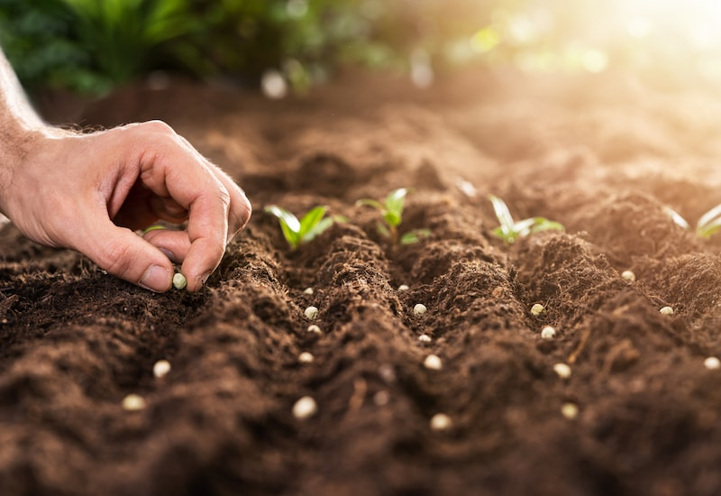
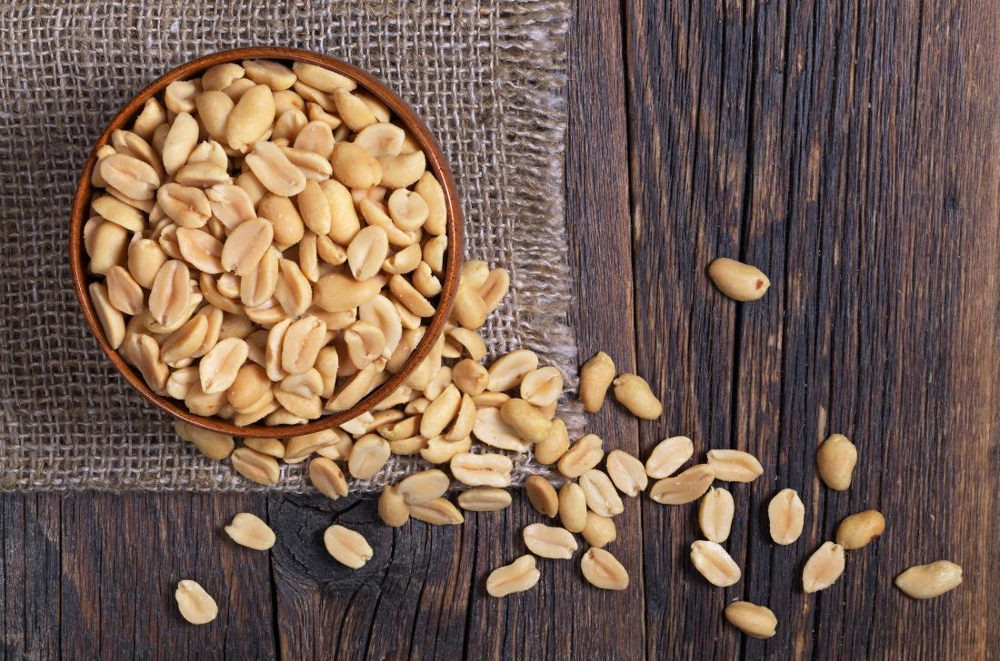
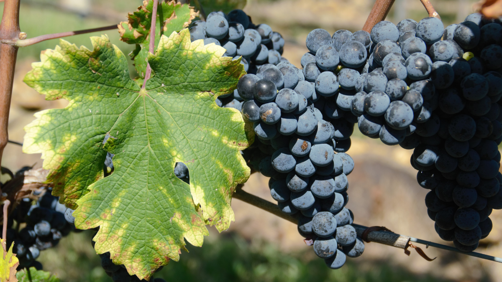
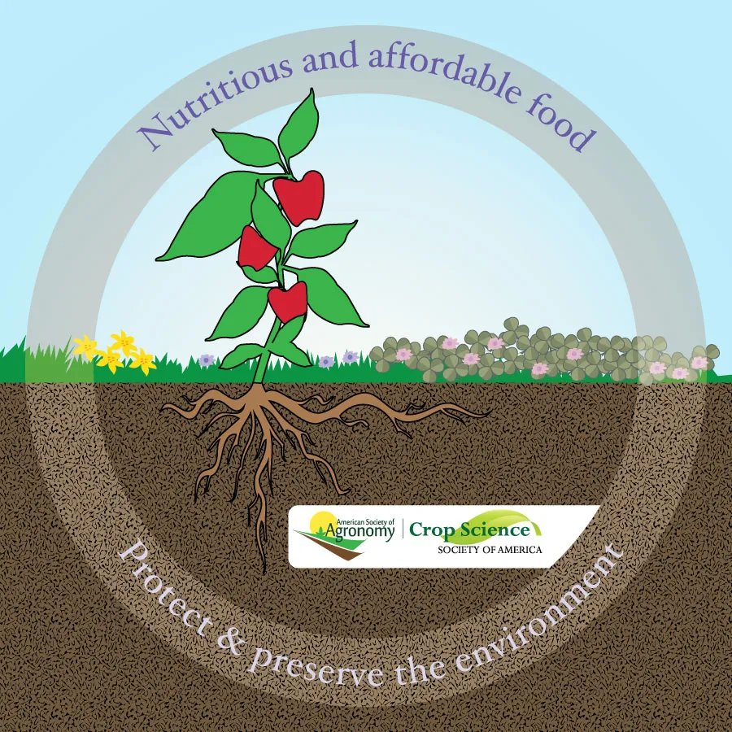

Do you grow peas, beans or other legumes in your backyard or garden? Have you ever heard about seed inoculation and how you can use it to produce more yield? Let’s learn about this and get the most out of your plants.
Sustainable Secure Food Blog
GROWING FOOD FOR ALL, SUSTAINABLE FOR OUR EARTH.
SUNDAY, JULY 16TH, 2023


Why should I buy inoculated seeds for my garden?
ON JUNE 22, 2023 - 8 MIN

Wild about peanuts – using crop wild relatives to improve today’s crops
ON SEPTEMBER 22, 2022 - 10 MIN
However you eat your peanuts – shelled, salted, or in a favorite mix – they are a snack item enjoyed by many. They are also a main ingredient in many favorite dishes, especially for vegans and vegetarians, as they contain protein.

How do nutrients in leaves inform farming practices?
ON May 22, 2023 - 6 MIN
Last fall, I spent hours washing leaves as I would wash my hands – first, I dunked them in soapy water and wiped off any residues. Then I rinsed the leaves with distilled water until there were no more hints of soapiness.

ABOUT US
Welcome to our blog about sustainable food production and food security!We are a group of students from the University of Guelph who have a passion for sustainable agriculture. We are currently working on a project to help farmers in developing countries grow more food with less resources. We are also working on creating a blog to share our knowledge and experience with others.
Contact US
Please Enter A Value For Name
Please Enter A Valid Email Address
Please Enter A Valid Mobile Number
Please Enter A Value For Message